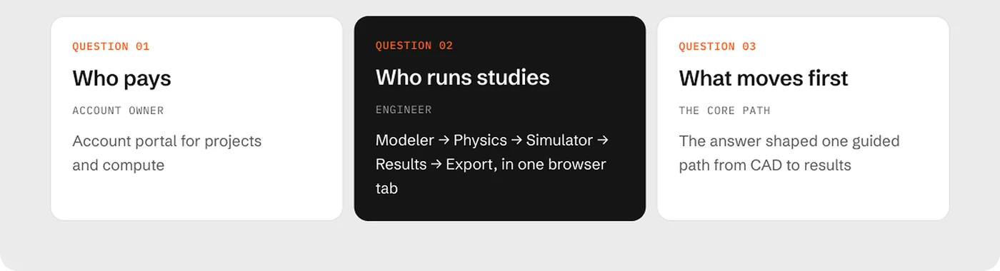

01 / HOW I WORK
From an unclear brief to a product teams can build.
Five stages run under every project I take on.
The outputs change with the brief. The order of the questions does not.
- 10years in design, across agencies and product teams
- 6in-depth projects, from brief to handoff
- 4markets: fintech, edtech, B2B SaaS, utilities
- 13shorter projects and explorations
The five stages
Every project runs on the same five stages.
Each stage answers one question before the next one starts.
Follow the link under each stage to see it in a real project.
-
STAGE 01
Discover
What does success look like, and for whom?
Workshops with the business and the people who build it.
SEEN IN04.2 Simulation in the browser

Fig. 01 / Stage 01Three workshop questions. -
STAGE 02
Audit & research
Where does it break today, and what proves it?
A scored UX audit, a benchmark or interviews.
SEEN IN03.1 AI tutor for families

Fig. 02 / Stage 02Two prototype audits on the same dimensions. -
STAGE 03
Structure
What goes where, and how do people move?
Sitemap, flows and wireframes at every breakpoint.
SEEN IN02.1 Financial education platform

Fig. 03 / Stage 03Five public sections and one private area. -
STAGE 04
Design & system
What does it look like in every state?
Brand screens assembled from tokens and components.
SEEN IN02.2 Pawn from home

Fig. 04 / Stage 04The offers step, built from the brand design system. -
STAGE 05
Ship
Is it built as designed, and can everyone use it?
Handoff with every state documented.
SEEN IN02.2 Pawn from home

Fig. 05 / Stage 05A WCAG audit of the branded prototype.


Ship feeds the next Discover.
What a release shows about real use becomes the first question of the next iteration.
Principles
Four rules I hold myself to on every project.
Start from evidence, not from screens.
Every project starts from what an audit.
Design the system, then the pages.
Templates and components first.
Design every state, not only the happy path.
Empty, loading, partial and error states are part of the brief.
Write decisions down, with what I rejected.
Each key decision records the option I turned down and the trade-off.
Anatomy of a decision
How I document a decision.
Four fields, always in the same order.
- 01 / PROBLEMTwo listings switched to touch filters at different breakpoints.
- 02 / DECISIONInline filters on desktop.
- 03 / REJECTEDInline filters from 640 px up.
- 04 / TRADE-OFFTablets lose inline filters.
See the full card in 02.1 Financial education platform, decision 03